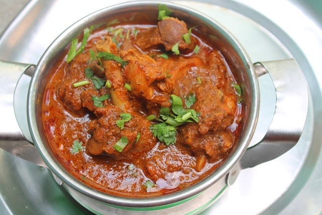

Chicken Curry

Description
Kerala Style Easy Chicken Curry is a traditional styled chicken delicacy with an outstanding flavor of cardamom.
This is a
popular dish in Kerala Cuisine known for its unique and strong flavors, simplicity and delicious
taste.
The spicy semi thick
aromatic gravy is the specialty of the dish. The dish not only tastes delicious but is
also flavorful with soft, tender and
succulent chicken pieces in an exotic cardamom flavored gravy. Serve
the dish with roti, chappathy, naan, jeera rice or even
with plain rice. To be exact, Kerala Style Easy
Chicken Curry goes well as a side dish with almost anything and is a favorite
with all. You can impress
your family and guests with the dish.
Ingredients
- 1 kg Chicken
- 1 1/2 tsp Chilly powder
- 1/4 tsp Turmeric powder
- 3 tsp Coriander powder
- 1 tsp Garam masala powder
- 1 tsp Pepper powder
- 1 tsp Ginger Paste
- 1 tsp Garlic paste
- 1/2 tsp Aniseeds powdered (Perinjeerakam)
- 6 nos Cardamom ground, (Elakka)
- Salt As required
- 2 tsp Coriander leaves chopped
- Curry leaves A few
- 2 - Cooking oil
- 2 nos Onions chopped, medium
- 3 nos Green chillies chopped
- 1 no Tomato chopped
- 2 cups Hot water
Steps
- For preparing Kerala Style Easy Chicken Curry, first cut the chicken into medium sized pieces.
- Marinate the chicken with red chilly powder, turmeric powder, coriander powder, pepper powder, garam masala
and cardamom powder for 30 mins.
- Heat oil in a pan.
- Add ginger and garlic paste and fry until it turns golden brown in color.
- Add sliced onions, green chillies, coriander leaves and curry leaves and stir well.
- When it becomes light brown in color, add tomato pieces.
- When the tomatoes become tender, add powdered aniseeds.
- Add chicken pieces followed by hot water and salt and cook thoroughly.
- When the gravy becomes thick, remove from the stove
- Serve Kerala style chicken curry with rice, idiyappam, appam, or chappathis.